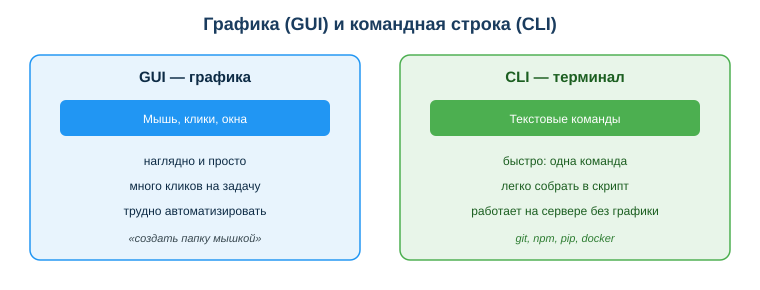
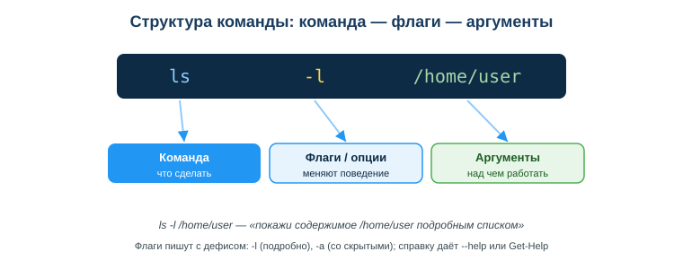

Дисциплина: Применение информационно-коммуникационных и цифровых технологий
Результат обучения: РО 2.1 — владение основами ИКТ · Объём темы: 2 часа
Квалификация: 4S06130103 «Разработчик программного обеспечения»
Представь свой первый рабочий день. Тебе дали доступ к учебному серверу и короткую задачу: «разверни проект, поставь зависимости, запусти тесты». Ты подключаешься к машине — и не видишь ни рабочего стола, ни значков, ни мышки. Только тёмный экран и мигающий курсор. Всё, что нужно сделать, делается текстовыми командами. Привычные «дважды кликнуть по папке» и «перетащить файл» здесь просто не существуют.
В этот момент происходит разделение. Тот, кто умеет работать в терминале, спокойно вводит несколько строк: переходит в нужную папку, клонирует проект, устанавливает пакеты, запускает тесты — и через пару минут видит результат. Тот, кто привык только к мышке, замирает: он не знает, как даже посмотреть, какие файлы лежат рядом. Он зависит от чужих подсказок и теряет время на том, что у коллеги занимает секунды.
Эта тема — про то, чтобы оказаться на правильной стороне этого разделения. Терминал кажется чем-то пугающим и «хакерским» только до тех пор, пока ты не понял его логику. А логика простая: ты не нажимаешь кнопки, а называешь словами, что нужно сделать. Команды короткие, точные и предсказуемые — поэтому их легко повторять, объединять в скрипты и автоматизировать. На удалённой машине, в облаке, на сервере графики часто нет вообще, и терминал — единственный способ управлять системой [3; 6]. Чем увереннее ты владеешь командной строкой, тем больше контроля над процессом у тебя в руках и тем меньше ты зависишь от чужой помощи.
После изучения темы ты сможешь:
ls, cd, mkdir).-l, -a); пишется с дефисом.Сначала разберёмся со словами, потому что их часто путают. Терминал — это окно (программа), в котором ты видишь текст и вводишь команды. Оболочка (shell) — это программа внутри терминала, которая читает твою команду, понимает её и просит операционную систему выполнить. Командная строка (CLI, command-line interface) — это сам способ работы: ты управляешь машиной не мышкой, а строками текста. На практике эти три слова используют почти как синонимы, и это нормально — главное понять идею.
Идея же такая: в графическом интерфейсе ты показываешь компьютеру, что сделать (навёл мышку, кликнул по папке, перетащил файл). В терминале ты говоришь словами: «покажи список файлов», «перейди в эту папку», «удали этот файл». Компьютер выполняет и отвечает тебе текстом.
Удобная аналогия. GUI — это как заказывать еду, тыкая пальцем в картинки в меню: удобно для новичка, но медленно, и ты ограничен тем, что нарисовано. CLI — это как сказать официанту словами точный заказ: «два кофе без сахара навынос». Если ты знаешь язык, это быстрее и гибче — можно заказать то, чего нет на картинке. Терминал — это «язык», на котором ты разговариваешь с компьютером напрямую.
Почему разработчики так любят терминал? Потому что текст можно повторить и автоматизировать. Клик мышкой нельзя «сохранить» и выполнить завтра ещё раз. А команду можно скопировать, вставить в инструкцию, записать в файл-скрипт и запускать сколько угодно раз без ошибок. Именно поэтому установка проектов, запуск тестов, развёртывание на сервере — всё описывается командами, а не «кликни сюда, потом туда».
Посмотри на схему «Графика (GUI) и командная строка (CLI)» (приложение А). Слева — привычный графический способ: окна, значки, мышка. Справа — терминал: текстовые команды и текстовый ответ. Это не «старое и новое» и не «плохое и хорошее» — это два инструмента под разные задачи.
| GUI (графика) | CLI (терминал) | |
|---|---|---|
| Чем управляешь | мышка, окна, значки | текстовые команды |
| Легко для новичка | да | нужно выучить команды |
| Скорость для частых задач | медленно (много кликов) | быстро (одна строка) |
| Повторяемость | трудно повторить точно | легко: скопировал и запустил |
| Работа на сервере без экрана | невозможно | основной способ |
| Автоматизация | почти нет | скрипты, автозапуск |
Вывод не «терминал лучше мышки». Вывод такой: для разовых наглядных задач удобнее GUI, а для частых, повторяемых и удалённых задач незаменим CLI. Разработчик пользуется обоими, но без терминала он просто не сможет делать значительную часть работы.
Три причины, почему CLI критичен именно для тебя как будущего разработчика [3; 6]:
Когда говорят «терминал», важно понимать, какая оболочка работает внутри, потому что команды немного отличаются. Тебе встретятся в основном две:
Get-ChildItem, Copy-Item), но для многих сделаны короткие псевдонимы (ls, cp), совпадающие с bash.Хорошая новость: на уровне логики команды совпадают примерно на 90%. Идея «перейти в папку», «показать список файлов», «создать папку» одна и та же — меняется только написание. Выучив набор один раз, ты легко переключаешься между системами.
Отдельно про Windows: если ты учишься на Windows, но хочешь работать с «настоящим» bash как на серверах, есть WSL (Windows Subsystem for Linux) — он запускает Linux прямо внутри Windows [5]. Это удобный способ тренироваться в той же среде, что и на боевых серверах. Подробно с устройством ОС и файловой системой ты разбирался в занятии 02 — здесь мы опираемся на это и учимся управлять всем этим командами.
Это самый важный раздел темы. Если ты поймёшь, как читается команда, то перестанешь бояться незнакомых строк — любую сможешь разобрать. Посмотри на схему «Структура команды» (приложение Б): команда читается слева направо по одной формуле.
команда флаги аргументы
ls -l /home/userТри части:
ls (показать список), cd (перейти), mkdir (создать папку), rm (удалить).-l — выводить подробно (в столбик с деталями), -a — показывать в том числе скрытые файлы, -r — рекурсивно (со всем содержимым папки). Флаги можно объединять: ls -la это то же, что ls -l -a./home/user — папка, список которой мы хотим увидеть.Разберём по этой формуле живой пример из урока:
cp -r ./src ./backupcp (copy, копировать);-r (recursive, рекурсивно — копировать папку целиком, со всеми вложенными файлами и подпапками);./src (что копируем) и ./backup (куда копируем).Читается так: «скопируй папку src со всем содержимым в backup». Без флага -r команда cp отказалась бы копировать папку — она по умолчанию работает только с отдельными файлами. Вот почему понимать роль флага важно: один символ меняет результат.
Алгоритм разбора незнакомой команды. Встретил непонятную строку — не пугайся, разложи её по формуле:
Применив эти четыре шага, ты поймёшь почти любую команду, даже встретив её впервые.
Вот рабочий минимум, который покрывает повседневные задачи. Слева — что делаем, потом bash, потом PowerShell.
| Действие | bash | PowerShell |
|---|---|---|
| где я (текущая папка) | pwd | Get-Location (pwd) |
| список файлов | ls -l | Get-ChildItem (ls) |
| перейти в папку | cd src | cd src |
| на уровень вверх | cd .. | cd .. |
| создать папку | mkdir app | mkdir app |
| создать файл | touch f.txt | New-Item f.txt |
| копировать | cp a b | Copy-Item a b |
| переместить/переименовать | mv a b | Move-Item a b |
| удалить | rm f.txt | Remove-Item f.txt |
| справка | ls --help | Get-Help ls |
Теперь по существу — что важно понять про ключевые команды.
pwd (print working directory) — «где я сейчас». Терминал всегда находится в какой-то одной папке («текущая папка»). Все относительные команды работают относительно неё. pwd показывает полный путь к этой папке. Это твоя «точка отсчёта» — с неё стоит начинать почти любую работу, чтобы не запутаться.
ls (list) — «что вокруг меня». Показывает файлы и папки в текущей папке. С флагом -l (long) выводит подробно: размер, дату, права. С флагом -a (all) показывает скрытые файлы (их имена начинаются с точки, например .git). Часто пишут вместе: ls -la. Это твои «глаза» в терминале — без ls ты работаешь вслепую.
cd (change directory) — «перейти». Меняет текущую папку. cd src — войти в подпапку src. cd .. — подняться на уровень вверх (две точки означают «родительская папка»). cd без аргументов в bash возвращает в домашнюю папку. Это твои «ноги» — то, чем ты перемещаешься по системе.
mkdir (make directory) — создать папку. mkdir app создаёт папку app. Важная деталь: mkdir src tests создаёт сразу две папки одной командой — потому что у команды два аргумента. Это и есть сила терминала: одна строка делает то, на что мышкой ушло бы много действий.
cp, mv, rm — копировать, переместить, удалить. cp a b — копировать (оригинал остаётся). mv a b — переместить или переименовать (оригинала по старому адресу больше нет). rm f.txt — удалить. Для папок cp и rm требуют флага -r (рекурсивно). Запомни ключевое различие: cp оставляет копию, mv перемещает, rm уничтожает.
touch / New-Item — создать пустой файл. В bash touch f.txt создаёт пустой файл (или обновляет дату существующего). В PowerShell тот же результат даёт New-Item f.txt.
Чтобы команды попадали в нужное место, надо понимать пути — адреса файлов в системе. Есть два вида.
/home/user/project/src. В Windows — с буквы диска: C:\Users\user\project\src. Такой путь работает откуда угодно — это как полный почтовый адрес с городом и улицей.pwd). ./src — папка src внутри текущей (точка означает «здесь»). ../tests — папка tests в родительской папке (две точки — «уровень вверх»). Это как сказать «соседняя дверь справа» — понятно только если знаешь, где ты стоишь.Три специальных обозначения, которые нужно запомнить:
. — текущая папка («здесь»);.. — родительская папка («на уровень вверх»);~ (в bash) — твоя домашняя папка.Понимание путей напрямую связано с разделом 4.4: путь — это чаще всего аргумент команды. Когда ты пишешь cp ./src ./backup, оба аргумента — относительные пути. А привычка сначала проверять pwd нужна именно потому, что относительные пути зависят от того, где ты сейчас находишься.
Невозможно и не нужно держать в голове все команды и флаги. Профессионал отличается не тем, что всё помнит, а тем, что умеет быстро найти нужное. У каждой команды есть встроенная справка.
В bash:
ls --help — короткая справка по команде (список флагов и их смысл);man ls — полное руководство (manual), подробное описание команды.В PowerShell:
Get-Help ls — справка по команде;Get-Help Get-ChildItem -Examples — с примерами использования.Алгоритм «встретил незнакомую команду»:
имя_команды --help (bash) или Get-Help имя (PowerShell);Этот навык — твоя независимость. С ним ты разберёшься с любой новой командой, библиотекой или инструментом, не дожидаясь, пока кто-то объяснит.
У терминала есть особенность, о которой нужно помнить с первого дня: в командной строке обычно нет корзины. Когда ты удаляешь файл через rm, он удаляется сразу и насовсем — восстановить его штатными средствами нельзя. В графическом интерфейсе удалённый файл попадает в корзину, и ошибку можно отменить. В терминале такой страховки нет.
Самая опасная команда для новичка — rm -rf. Разберём её по формуле: rm — удалить, -r — рекурсивно (всё содержимое папки), -f — force (принудительно, не переспрашивая). Вместе это «удали всё внутри, не задавая вопросов». Если запустить её не в той папке, можно стереть нужные данные за секунду. А команда rm -rf / в Linux пытается удалить всю систему от корня — это классическая катастрофа.
Вторая частая беда — пробелы в путях. Если папка называется «Мои документы» и ты напишешь cd Мои документы, терминал воспримет это как два разных аргумента («Мои» и «документы») и выдаст ошибку. Правильно — взять путь в кавычки: cd "Мои документы".
pwd и ls — убедись, что ты в той папке, где думаешь, и видишь, что собираешься менять;"Мои файлы";rm, особенно -rf) применяй осознанно — сначала посмотри, что удаляешь;Эта осторожность — не трусость, а профессионализм. Опытный разработчик уважает терминал именно потому, что знает его силу.
Главная ценность терминала раскрывается, когда команды объединяются. Серию команд можно записать в текстовый файл (скрипт) и запускать целиком. Так и работают инструменты разработчика, которыми ты будешь пользоваться постоянно:
git clone, git add, git commit, git push — всё командами;npm install, pip install — одна команда ставит десятки нужных библиотек;npm test, pytest — командой, в том числе автоматически на сервере.Связь с профессией прямая: всё это — части ежедневной работы разработчика, и почти всё управляется из терминала [3; 6]. Та самая задача из введения — «разверни проект, поставь зависимости, запусти тесты» — целиком решается несколькими командами: git clone …, cd проект, npm install, npm test. Тот, кто владеет терминалом, делает это за минуты. Поэтому уверенная командная строка — не «дополнительный плюс», а базовый фундамент, на котором стоит вся остальная работа с кодом.
Пример 1 — разбор команды по формуле. Дана строка ls -la /var/log.
Разбор: команда — ls (показать список); флаги — -l (подробно) и -a (включая скрытые файлы), объединены в -la; аргумент — путь /var/log (абсолютный, начинается со слэша). Команда выводит подробный список всех файлов, включая скрытые, в папке /var/log. Видишь: даже незнакомую строку легко прочитать по формуле раздела 4.4.
Пример 2 — создание структуры проекта одной серией. Нужно создать папку project с подпапками src, tests и файлом README.md.
mkdir project
cd project
mkdir src tests
touch README.mdРазбор: первая команда создаёт корневую папку, вторая входит в неё (теперь все следующие команды работают внутри project), третья создаёт сразу две подпапки одним вызовом, четвёртая создаёт пустой файл. В PowerShell последняя строка была бы New-Item README.md. Четыре строки против десятков кликов мышкой.
Пример 3 — безопасное удаление. Студент хочет почистить папку проекта и сразу пишет rm -rf *.
Разбор: это опасно — он не проверил, где находится. Правильный порядок по разделу 4.8: сначала pwd (где я?), затем ls (что здесь лежит?), и только убедившись — удаление. Привычка «pwd → ls → потом действие» спасает от необратимых ошибок, ведь корзины в терминале нет.
rm -rf, не проверив текущую папку. Почему: удаление необратимо, корзины нет — можно стереть нужное. Как правильно: всегда сначала pwd и ls, и только потом удаляй.cd Мои файлы). Почему: терминал примет это за два аргумента и выдаст ошибку. Как правильно: бери путь в кавычки — cd "Мои файлы".--help.-r. Почему: cp и rm по умолчанию работают с файлами, а не с папками. Как правильно: для папок добавляй -r (рекурсивно).--help/Get-Help.pwd;ls (или ls -la);--help / Get-Help, потом выполняй.pwd/ls, опасные команды применяй осознанно.cp -r ./src ./backup на части: где команда, флаг, аргументы и что она делает.., .. и ~?rm -rf, не проверив текущую папку, и как работать безопасно?project с подпапками src и tests./home/user/... или C:\Users\...).ls, cd, rm)../src, ../tests).-l, -r); пишется с дефисом.Основная литература:
Дополнительно:
Нормативные источники РК:
Электронные ресурсы и официальная документация:
Международные рамки:
assets/03_shema-gui-vs-cli.svg. Слева управление мышкой и окнами, справа — текстовые команды. Сравни два подхода: что используешь для управления в каждом и почему одна команда часто быстрее набора кликов.assets/03_shema-struktura-komandy.svg. Читай команду слева направо по формуле: команда (что сделать) → флаги (как именно) → аргументы (над чем). По этой схеме разбирается любая незнакомая строка.

Материал подготовлен на основе урока темы (urok.md) и приведённых в конце источников; он расширяет и углубляет содержание урока для самостоятельного изучения. Источники приведены главами и ссылками (без номеров страниц); нормативные акты — с реквизитами.
Материал разработан рабочей группой ТОО «Колледж Хекслет Казахстан» и одобрен к использованию в обучении решением Педагогического совета.